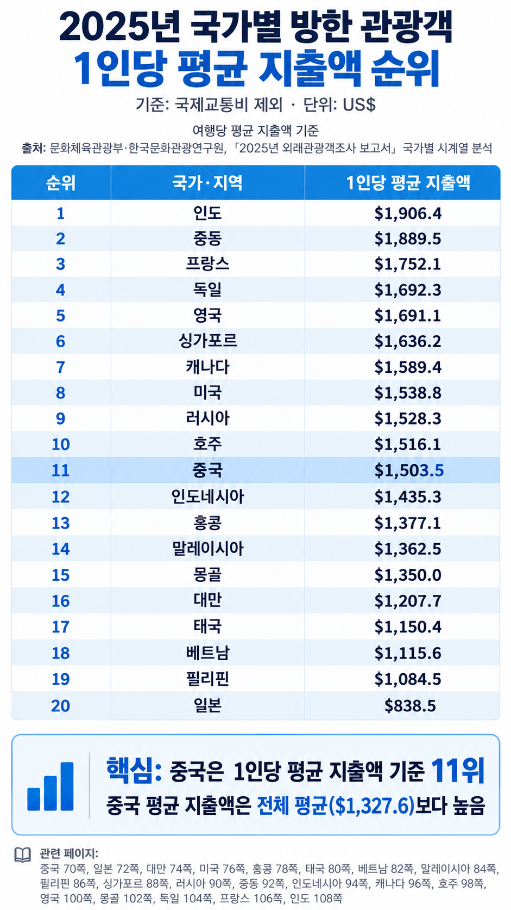
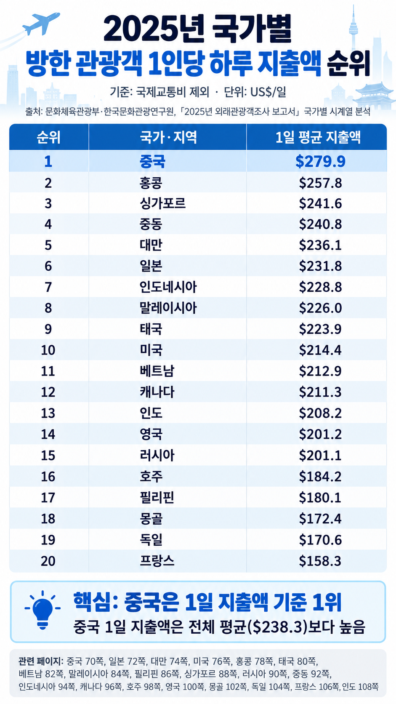
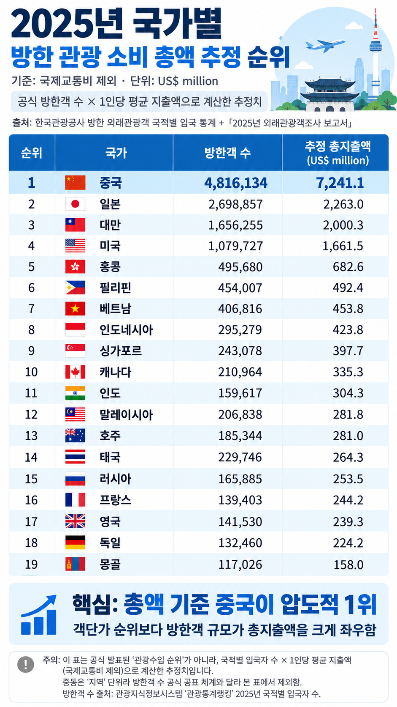

시작전에 토템 걸고 시작한다
중국인이 여행 와서 돈을 안쓴다는 글이 개드립을 갔는데 팩트를 아무리 말해줘도 인정안해서 공부한게 아까워서 쓴다



중국 패권주의 중국의 동북공정 개좆같고 역사도 없는 한푸입고 한국와서 개지랄하는 중국인 있으면 꺼지라고 한마디 할거고 시끄럽고 지집처럼 개지랄하는 중국인있으면 개지랄 함
근데 객관적인 국가통계를 가져와도 인정을 안하면 니네가 혐오하는 중국인이랑 다를게 뭔데?
경제 죽는다 살려내라! > 그럼 돈많이 쓰는관광객들을 통해 경제를 살리겠습니다. > 중국인혐오 > 관광객 감소 > 경제 죽는다 살려내라! 이런패턴이라는거임?